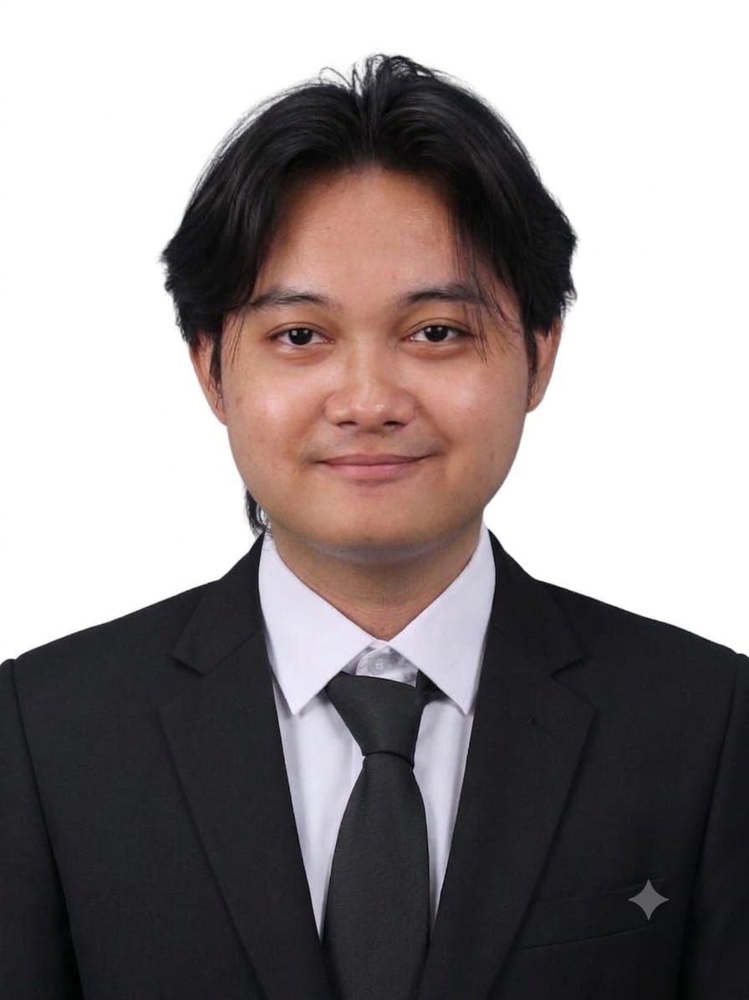
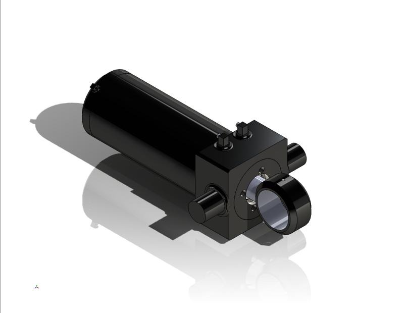
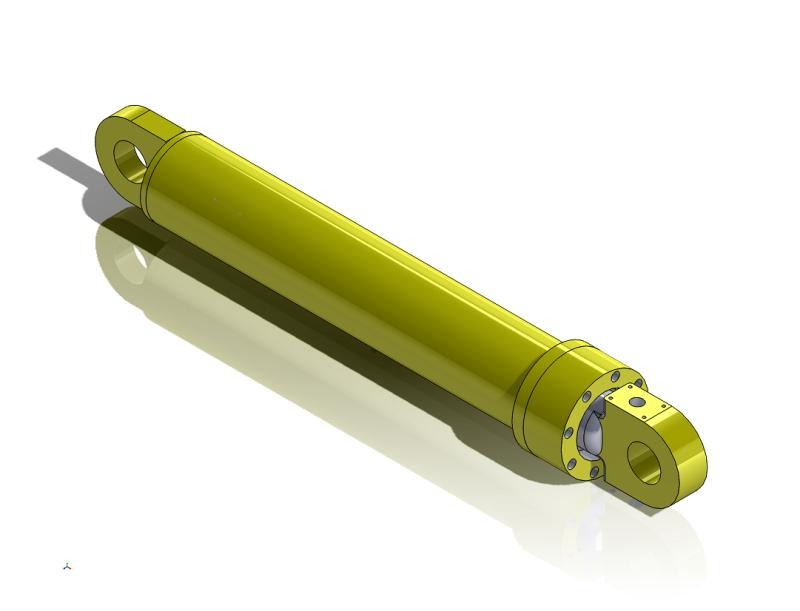
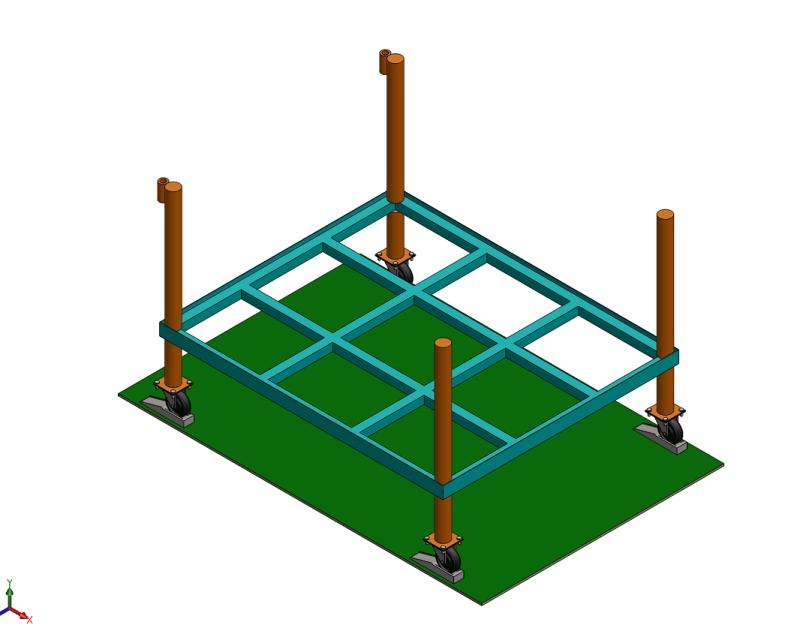
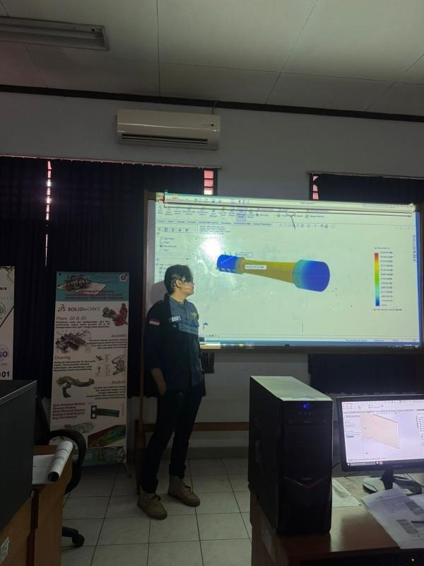
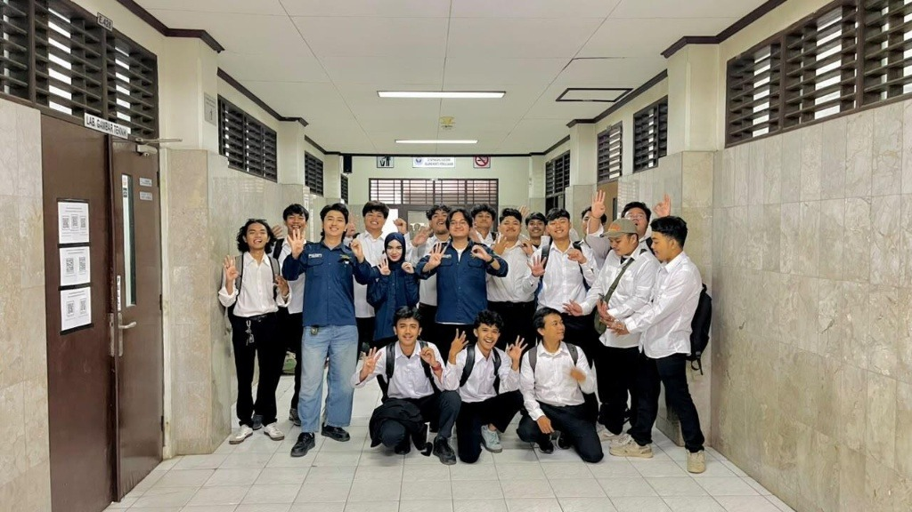
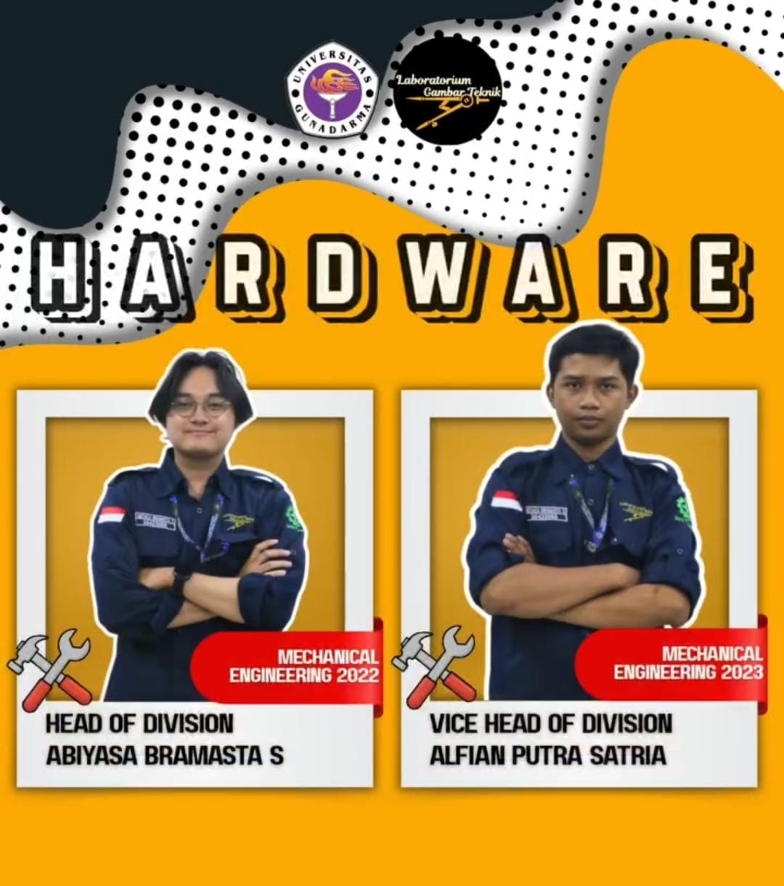
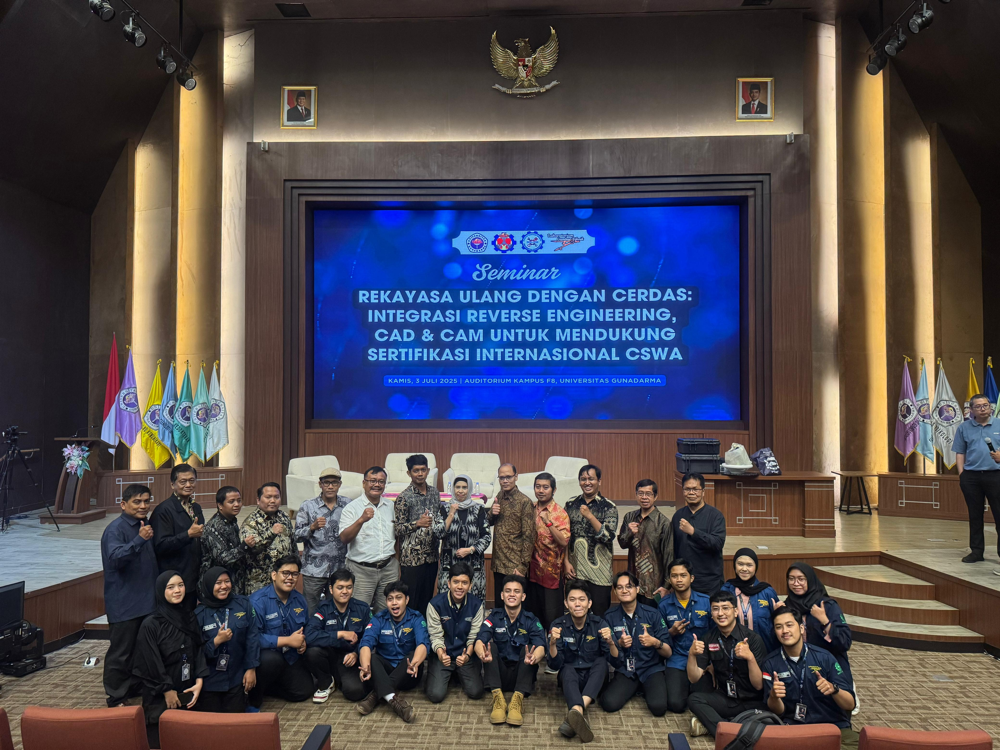

Portfolio Engineer

Universitas Gunadarma
S1 Teknik Mesin (Sep 2022 - Agu 2026)
Depok, Indonesia | IPK: 3,59/4,00
Skripsi: Perancangan Atmospheric Water Generator (AWG) menerapkan prinsip kerja siklus refrigerasi untuk sistem air utilitas, bekerja sama dengan PT Mitra Teknologi Gemilang.
Sebagai Lulusan S1 Teknik Mesin dari Universitas Gunadarma, saya memiliki pengalaman hands-on lebih dari 3 tahun dalam Computer-Aided Design (AutoCAD, SolidWorks, CATIA).
Melalui pengalaman magang di PT Komatsu Indonesia, saya merancang trolley guide Autonomous Mobile Robot (AMR) dan mendokumentasikan mekanisme hidraulik kompleks (BH Swing, Hoist HD785, PC25MR Boom). Saya terbiasa menganalisis dan mengembangkan proses engineering yang fokus pada implementasi continuous improvement untuk efisiensi, kualitas, dan produktivitas di lantai produksi.
Dalam kapasitas akademis dan operasional, saya memiliki sertifikasi dalam PLC, SCADA & Automation Systems Commissioning. Saya juga memiliki rekam jejak yang kuat dalam melatih 80-100 mahasiswa setiap tahun (tingkat kelulusan 97%) di laboratorium Gambar Teknik, memadukan teori dengan tantangan desain nyata serta standar industri seperti ISO 14001 dan ISO 9001.
Magang (CAD Drafter / Archivist)
Okt 2024 - Nov 2024



Asisten Laboratorium
Jan 2023 - Sep 2026


Ketua Divisi Hardware & Panitia
Jan 2023 - Okt 2025


Saya selalu terbuka untuk mendiskusikan peluang baru, project engineering, atau inovasi dalam proses manufaktur. Silakan hubungi saya melalui jalur berikut:
Bekasi, Jawa Barat, Indonesia